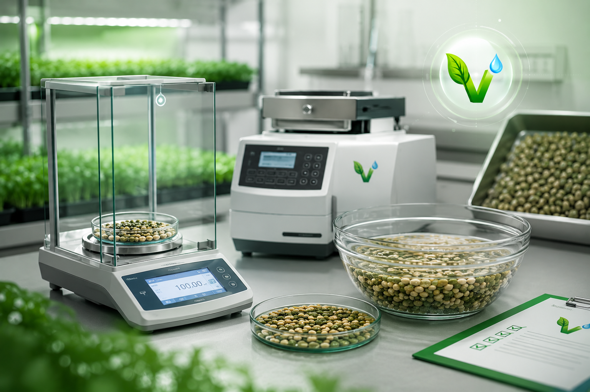
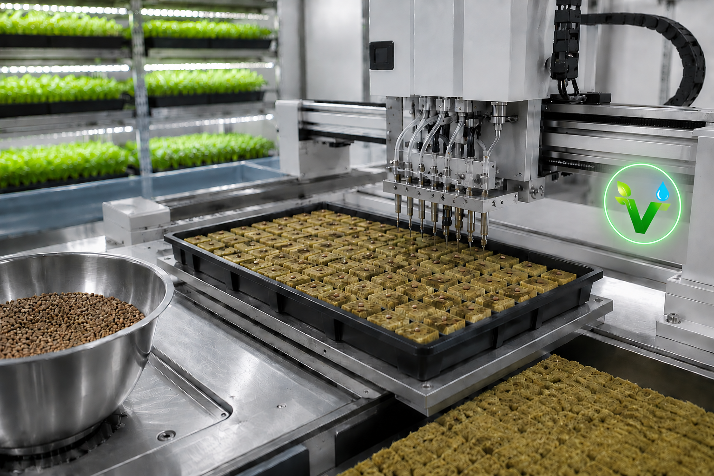
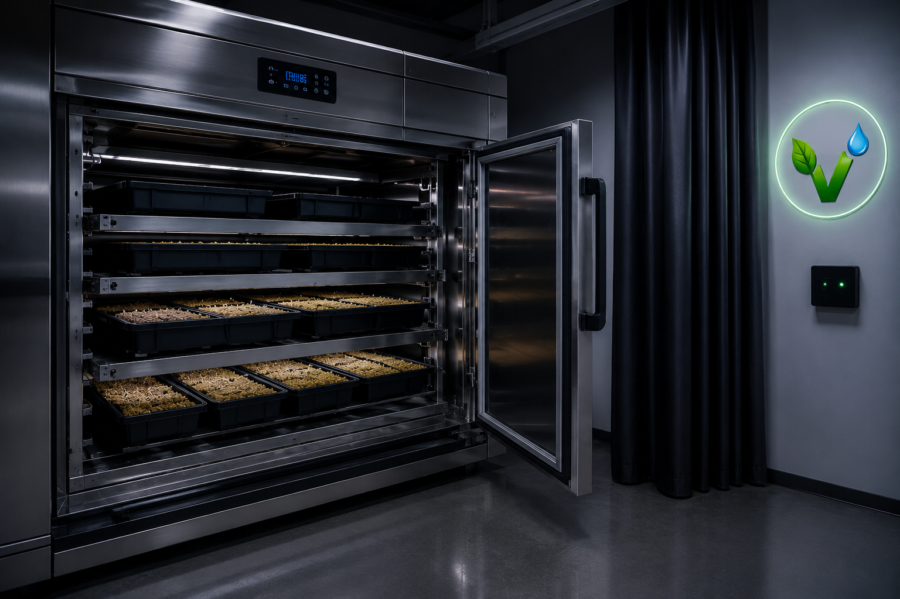
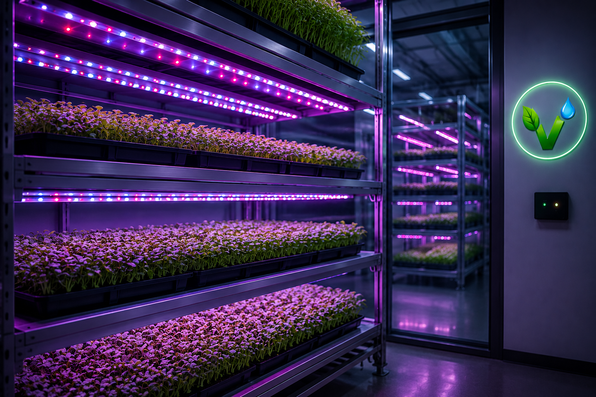
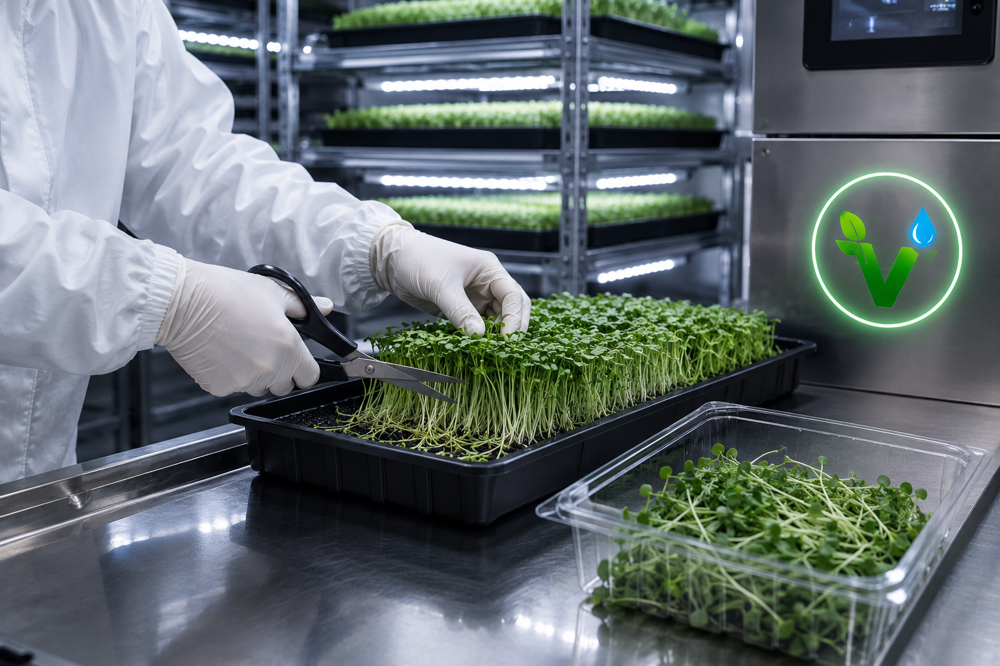
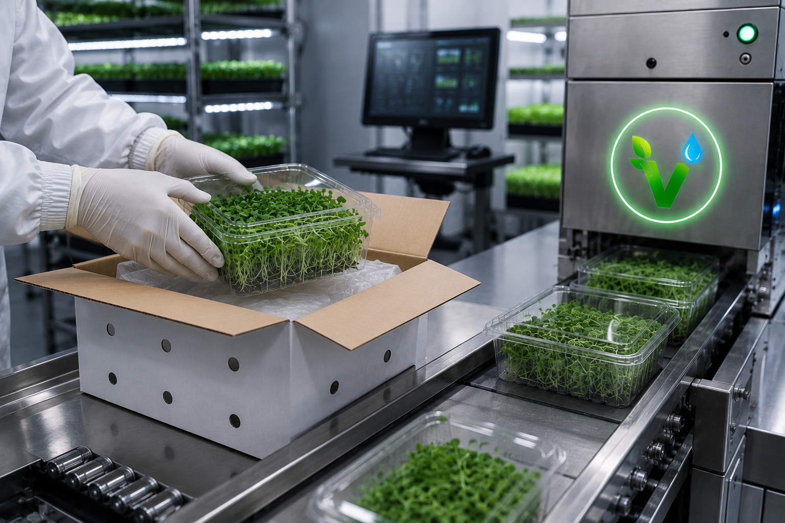
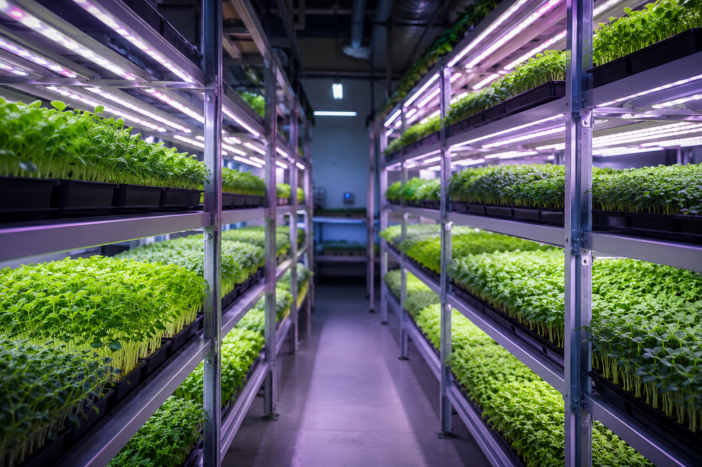

Как работает наша вертикальная ферма
От семени до вашего стола — полный контроль на каждом этапе

Калибровка и замачивание семян. Активация ферментов для быстрого прорастания. Используем только сертифицированные семена.

Ручной посев в минеральную вату или кокосовое волокно. Никакой почвы — никаких вредителей и пестицидов.

24–48 часов в тёмной камере при влажности 90%. Имитация «под землёй» для дружных и быстрых всходов.

Синий (460 нм) и красный (660 нм) спектр. 16 часов света, 8 часов темноты. Растения растут в 2 раза быстрее.

Срезка ножницами в день готовности. Микрозелень сохраняет максимум витаминов и свежести.

Упаковка в дышащие контейнеры. Отправка в день срезки. Доставка курьером или СДЭК до вашей двери.
«Вертикальная ферма» — это современное гидропонное предприятие, специализирующееся на выращивании микрозелени. Наша ферма оснащена многоярусными стеллажами с LED-освещением полного спектра и автоматической системой подачи питательного раствора.
Гидропоника — это метод выращивания растений без почвы, на искусственных средах. Корни растений находятся в субстрате (минеральная вата, кокосовое волокно), который регулярно орошается питательным раствором.
Все процессы на ферме сертифицированы. Датчики pH и электропроводности работают круглосуточно, обеспечивая растениям идеальное питание.
